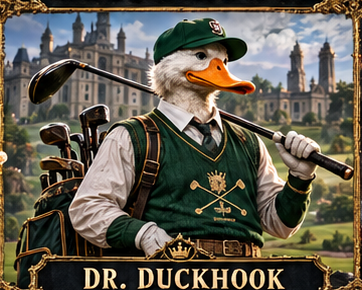
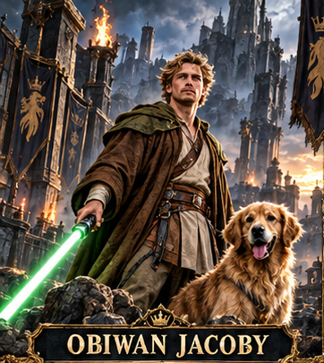

REFERENCE INPUT KIT — NOT GENERATED ART. Exactly two approved subjects. Current canvas1080×1920. No winner chosen.


A Round of Answers A charity invitation. A familiar rival. Nothing casual about the round. The invitation promised a morning for a good cause. The round exposed less charitable intentions. Duckhook knew every ridge of his own course; ObiWan had returned with a memory the host would rather forget. A clean strike earned a glance. A ball in the rough earned silence. By the time they walked toward the green, the autumn light was still beautiful. Neither rival was looking at it.
Use COMMISSION.md and layout.json with these exact files. This kit does not certify provider attachment, final results or picture quality.